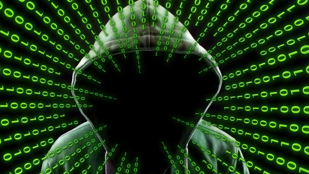
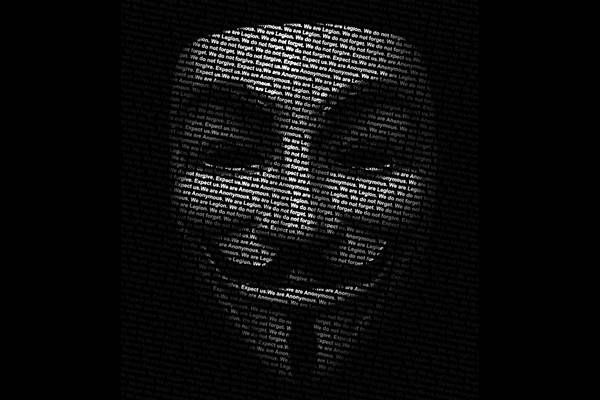

About Anonymous
Anonymous is a collective of online and offline activists who engage in direct action, hacktivism, and other subversive digital and physical actions. The group was founded on the imageboard 4chan in 2003. Anonymous has no formal leadership or membership, instead operating as a decentralised network of individuals with similar interests. Anonymous members can be distinguished in public by their Guy Fawkes mask, which originated from the graphic novel “V for Vendetta” by Alan Moore and David Lloyd.
The Anonymous group was originally a small collective of politically radical, anti-authoritarian, hacktivist. It has grown to include other like-minded individuals from around the world who are drawn together by their shared ideals and goals. In 2003, the group became known for its Internet trolling campaigns against organizations and individuals with whom they disagreed. In 2008, the group took part in protests against the Church of Scientology that led to attacks on Scientology websites and black faxes to their offices. In 2010, members of Anonymous participated in a series of coordinated denial-of-service attacks against government, religious, and corporate websites. In 2011, Anonymous became associated with Occupy Wall Street protests as well as other protest movements like Arab Spring revolutions. These are the lines that are used by anonymous as their punchline.
We are anonymous
We are legion
We do not forgive
We do not forget
Expect us.
The Anonymous group has a long history of fighting for the freedom of the internet and against censorship. The group is well known for their cyber-attacks on various institutions, organizations and governments that they believe suppress free speech. The group has been a driving force behind many social movements like Occupy Wall Street, Arab Spring and Black Lives Matter. Anonymous first public operation was to protest against Scientology. They were also involved in OpBART, OpAustralia, OpBahrain, OpIsrael and many more. Anonymous has no single, identifiable leadership or organization structure. Anonymous was originally a small hacking group that became an international activist movement with the intent to defend the rights of internet users and to fight censorship, government corruption, and corporate malfeasance. They have been associated with various high-profile cyberattacks such as Project Chanology, Operation Payback, and OpIcarus. History tells us that “anonymous” is a Latin word meaning “no identity”. It can also be described as doing things or making statements for an unknown agent which produces unauthorized texts, sounds or behaviors on websites.
The advent of the internet has made it possible for large numbers of people to present thoughts and opinions without showing their real identity. The group became known for various high-profile operations, many involving considerable technical sophistication. It was widely-reported that Anonymous in 2014 had over 10,000 knowledgeable members divided into about one thousand active hackers, which included groups like Antisec, Lulzsec, or Rootsec. However, things changed in November 2016 when the most widely known Anonymous Twitter account went from having 170’000 to 8’400 followers overnight. According to several former-members who contacted themselves only by their alias.
The account has been used specifically to post specific details on government interference with human rights; personal stories relating to The group became frustrated with the global political and economic situation, as well as with big business and secret surveillance by mankind. That frustration together with a global computer hacking movement, loads of pent up anger accumulated over the past few decades, careless denials of privacy rights, and a dangerous culture of conspiratorial thinking gave birth to MOVA. They also participate in cyberattacks on systems intended to symbolically attack such regimes.
Anonymous means to hide your identity from other people. That’s why we are using a special type of guyfox mask. Anonymous history was totally different from other groups available on the internet. No one knows how many anonymous members associated with the group. These things make us different from others. No one is our boss who can control everything inside the office. There is no headquarters of the anonymous group. If you or someone wants to join us it’s your choice. You’re in or out its depends upon you. Whenever do you want to come and whenever you want to go it’s your choice no one will force you. Our main motive is freedom on the internet. We want every citizen of the world to have equal rights to speak. If you want any kind of help related to cyber securities or any other topic, visit anonymous contact us page. If your request will accept by one of our representatives will contact you very soon. Below is our mail address you can drop us mail annymoushackers.net@gmail.com Expect us.